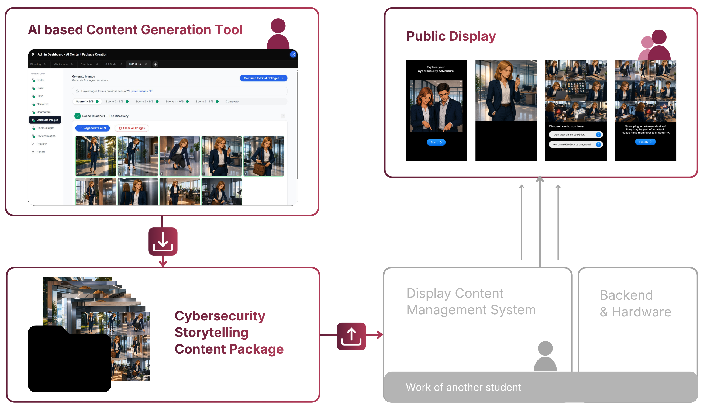
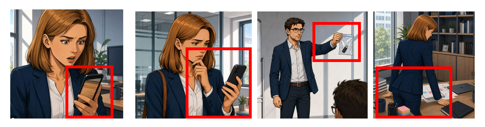
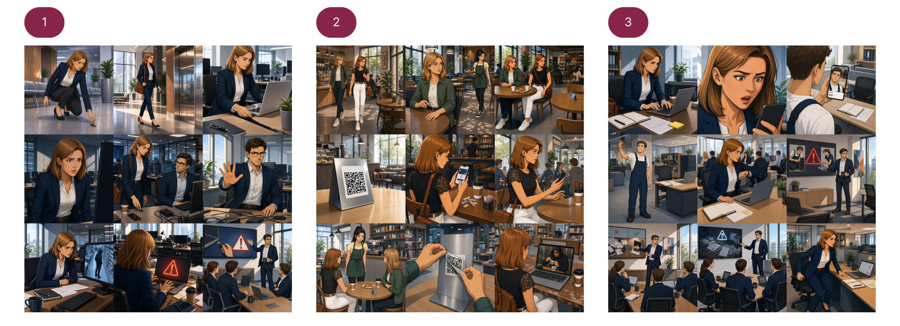
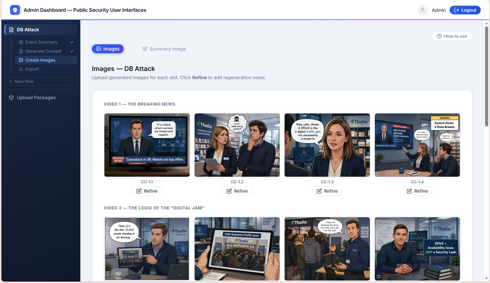
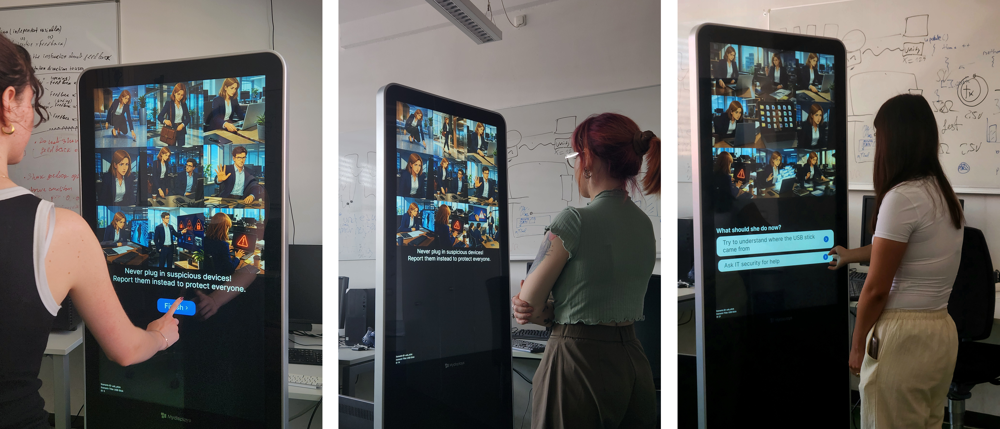

Ten months, a lot of iterations.
Research with papers & Miro
Read a lot of papers and gained insight into different topics. Then mind mapping and summarizing all information, inspiration and ideas on Miro.
Flows & sketches in Figma
Many flow diagrams for the AI generation tool, iterated several times. First sketches for the public display content, then basic and later more detailed Figma prototypes.
Build & test with Claude Code and the display
Once the flow was fixed, I vibe coded the tool with Claude Code and iterated it along usability heuristics and team feedback. Display prototypes were iterated in the team, tested on the display, then iterated again.
Study & analysis with Jupyter and Atlas.ti
Several sessions to iterate the study design, to make it as trustworthy as possible with the least side effects. After another student connected my display content to the system, we recruited participants. Five weeks of study, then analysis, graphics, interpretation and the final research documents.
Three research areas,
one research gap.
My research builds on three main research areas as its foundation. The thesis is part of a team project in which several students worked together with the company Thalia Bücher GmbH. On this page I only present the parts I did myself, not the work of the other students.
User-centered security [1–5]
- Security systems have to be based on user needs and preferences
- Focus on usability, usable interaction and user feedback
- Users are an active resource for cybersecurity, not just a risk
- Knowledge alone rarely changes behavior long-term
Public displays [6–8]
- Displays placed in public and publicly used spaces
- Because of that, they struggle above all with getting people's attention in the first place
- Target-group-focused content raises attention and keeps it relevant and understandable
- This helps prevent display blindness, so the display gets noticed at all
Public Security User Interfaces [9]
- Combine user-centered security and public displays
- Present and distribute security information in public spaces
- Gamification and storytelling can promote security awareness and engagement
- The CyberFrame project found that AI comics are very well suited for cybersecurity education [10]
Sources (10)
- Zurko, M. E. & Simon, R. T. (1996). User-centered security. Proceedings of the 1996 Workshop on New Security Paradigms (NSPW '96), pp. 27–33.
- Nielsen, J. (1994). Enhancing the explanatory power of usability heuristics. Proceedings of CHI '94, pp. 152–158.
- Norman, D. (2013). The Design of Everyday Things. Basic Books.
- Zimmermann, V., Schöni, L., Schaltegger, T., Ambuehl, B., Knieps, M. & Ebert, N. (2024). Human-Centered Cybersecurity Revisited: From Enemies to Partners. Commun. ACM 67(11), pp. 72–81.
- Sasse, M. A., Hielscher, J., Friedauer, J. & Buckmann, A. (2023). Rebooting IT Security Awareness – How Organisations Can Encourage and Sustain Secure Behaviours. In: Computer Security. ESORICS 2022 International Workshops, pp. 248–265.
- Huang, E. M., Koster, A. & Borchers, J. (2008). Overcoming Assumptions and Uncovering Practices: When Does the Public Really Look at Public Displays? In: Pervasive Computing, LNCS Vol. 5013, pp. 228–243.
- Parker, C., Tomitsch, M. & Kay, J. (2018). Does the Public Still Look at Public Displays? A Field Observation of Public Displays in the Wild. Proc. ACM Interact. Mob. Wearable Ubiquitous Technol. 2(2).
- Memarovic, N., Clinch, S. & Alt, F. (2015). Understanding Display Blindness in Future Display Deployments. Proceedings of the 4th International Symposium on Pervasive Displays, pp. 7–14.
- Murtezaj, D., Paneva, V., Distler, V. & Alt, F. (2024/25). Public Security User Interfaces: Supporting Spontaneous Engagement with IT Security. Proceedings of NSPW '24, pp. 56–70.
- Barlage, K., Will, M., Hein, O., Mecke, L., Thalhammer, P. & Alt, F. (2026). CyberFrame: AI-Supported Hybrid Comics for Cybersecurity Awareness. In: Extended Abstracts of the 2026 CHI Conference on Human Factors in Computing Systems (CHI EA '26). doi.org/10.1145/3772363.3798980
What has not yet been analyzed in sufficient detail is the combination of AI-generated storytelling with a Public Security User Interface. This is the research gap my work is based on. My goal was to develop and evaluate a system that fills exactly this gap, with two research questions that target it directly:
Research question 1
How does AI-generated, story-based cybersecurity content on a public display influence users' risk perception and behavior?
Research question 2
How does AI-generated, story-based cybersecurity content on a public display influence the user experience?
First, we developed a complete system.
With an AI-powered content generation tool, people from companies, universities or anyone who wants to display security content can create content packages step by step with the help of AI and then export them.
AI content generation tool
Create the content package step by step with AI, then export and download it.
Content package
45 images (9 per scene), 5 scene collages, 1 JSON file with all metadata and 1 package collage that sums up the package.
Public display
Shows the content. I also evaluated it extensively in a study, both the content and the engagement with the display.

Many ideas tested, only a few kept.
Our format changed a lot along the way. We had a lot of ideas that we tested, iterated and sometimes dropped. We wanted a system that is efficient and doesn't cost an enormous amount, otherwise it wouldn't be scalable or really relevant for the company.
Iteration process: Ideas & Formats
| Robot companion | Dropped | A robot companion with selectable characters, for gamification. Many iterations in clip-art and video style, plus a video generation tool for its emotions. Dropped to keep the focus on the content. |
| Comic styles | Dropped | Styles like Simpsons, Disney cartoon or realistic, switchable in the answer options. Dropped because of scalability and costs. |
| Start screen: following eyes | Dropped | Eyes that follow people passing by, to gain their attention. |
| Start screen: robot eyes | Dropped | The same eyes, now belonging to the robot character. Dropped together with the robot. |
| Start screen: collage | Dropped | A sneak peek of what happens on the display, shown as a collage. |
| Start screen: waving characters | Final | A mix of both ideas: the main characters wave at you, give a sneak peek of the comic and point at the button that starts the interaction. |
| Video | Dropped | Efficiency, AI costs, content consistency |
| Comic-style video | Dropped | Hard to control |
| Comics with text | Dropped | Hard to control, text distracts |
| Stop-motion images | Final | Video flow without generating video |
| Speech bubbles | Dropped | Distract from the story |
| Optional subtitles | Final | Story stays clear without text |
| More images per scene | Dropped | Generation time and cost |
| Nine images per scene | Final | Clear and easy to follow, confirmed in the study |
Challenges
- API & AI costs (balancing image number)
- Scalability
- Efficiency (generation speed and story clarity)
- Consistency (character style sheets, image quality, foreground action focus instead of every detail)
- Technical limits (errors of the tool and AI models)

Five scenes, different paths
Each content package tells a story in five scenes: the problem situation, the wrong action, the right action, a risk explanation and a learning summary.
After each scene there are two options for moving on to another scene. This creates different paths along which users see the five scenes in different orders. The paths are defined beforehand in the generation tool and the content management system.

From the story to the
exportable image package.
To create the packages, we use the AI-powered content generation tool. I developed it with Claude Code and improved it over many iterations based on Nielsen's usability heuristics [2] and repeated feedback from our team. The final version uses GPT Image 2.0 for image generation and GPT-4.0 for text. We tested several AI models and chose the ones that fit our needs best and produced the best output.

Visibility of system status
- Sidebar, as in many other programs
- Only current and completed steps are usable
- Status indicators on every step show the progress
Consistency & standards
- Follows conventions of tools like Canva or Visual Studio Code
- Consistent layout and icon system
- Sidebar, top bar and familiar navigation
Error prevention
- Steps that aren't or are no longer available are locked
- Warning messages explain what an action will do
User control & freedom
- The user stays responsible for the creation process
- All AI suggestions are editable
- AI suggestions save time; users with more time or specific ideas can create everything themselves
The content then runs on the public display.
Design decisions
- Square images. Landscape leaves empty space on our portrait display, portrait crops the backgrounds too much. Square leaves room for the answer options below.
- Stable layout. Image at the top as the main focus; subtitles and buttons below. No layout shifts or changing image sizes.
- Tested on-site. Every prototype was tested on the display and discussed as a team.
- Scene collages. After each scene, users can go through it again at their own pace.
- Final collage. Sums up the key takeaway and concludes the story.

A complex study in two phases.
We used a within-subjects design, so the same participants took part in both phases. We recruited through university mailing lists, Slack, WhatsApp and personal contacts. The only requirement was a minimum age of 18; no prior knowledge was needed.
Phase 1 · Online via Zoom
~ 40 min- Study questionnaire via link: six security scenarios, five answer options each
- Three cybersecurity scenarios: an unknown USB stick, a cluttered workspace with sensitive information, a fake QR code in a café
- Three comparison scenarios with other office security situations
- Semi-structured interview: participants briefly explained the reasoning behind each answer
Phase 2 · In the lab on-site
~ 50 min- Six to eight days later for all participants, to ensure comparability
- About ten minutes of interaction with the public display
- Same questionnaire and scenarios plus a UEQ, via Zoom
- Same reasoning interview as in phase 1, via Zoom
- Semi-structured feedback interview on the interaction and the content

Participants
completed both phases
years average age
female / male
Safer intentions.
A positive experience.
Analysis
- Answer options and scenario order were randomized every time.
- Because of a minor error, questionnaires and reasoning interviews were analyzed for 20 participants; feedback interviews for all 24.
- Wilcoxon signed-rank test, paired-samples t-test and inductive thematic analysis in Atlas.ti.
- Limitations: controlled lab environment and a specific, relatively young participant group.
Behavioral intentions
Safe-behavior score, 1 to 5. Longer is safer. N = 20.
Risk perception
Agreement with the riskiest option, 1 to 5. Shorter is safer. N = 20.
After the display, behavioral intentions became safer and risk perception improved. Concrete actions had the strongest impact: the USB stick and QR code scenarios showed the strongest significant decreases. The heavy box, which wasn't on the display, also improved, which could point to a repetition effect; the wet floor showed no change. Efficiency and time pressure still compete with security.
User Experience Questionnaire
Scale means from −3 to +3, compared against the UEQ benchmark. Bars show 0 to +3.
Excellent = top 10 % of benchmark products. Good = top 25 %.
Three of the six UEQ categories reached an excellent rating and three a good rating, so the results were very positive. The feedback interviews gave further insight into the experience.
Story comprehensibility
8.88/10Frequently described as understandable and informative.
| Reason | n | |
|---|---|---|
| Confusion about some image details | 2 | |
| Clear content | 5 | |
| Unclear story flow | 4 | |
| User freedom | 1 | |
| Too high speed and cognitive load | 1 | |
| Understandable and informative | 10 | |
| Predictable | 1 | |
| Understanding can be better | 1 | |
| Clarity and visuals | 2 | |
| Improvements | n | |
| Slower and simpler | 2 | |
| More scenarios | 1 | |
| Add creative details | 2 | |
| None | 6 | |
| Add more text details | 4 | |
| Improve text wording | 2 | |
| Video instead of images | 2 | |
| Add audio | 2 | |
| Quiz after each scenario | 1 | |
| Add chat bot | 1 |
Character identification
7.00/10Relatable scenarios were the main reason. Personalization options were an important suggestion for improvement.
| Reason | n | |
|---|---|---|
| Relatable character gender | 5 | |
| Relatable character job | 6 | |
| Third person story perspective | 1 | |
| Characters represented well | 2 | |
| Relatable story scenarios | 11 | |
| Improvements | n | |
| Side character originality | 2 | |
| More visual diversity and variety | 4 | |
| No improvements | 10 | |
| Less gender bias | 1 | |
| Personalize own character | 2 | |
| Add audio | 1 | |
| Personalized story | 2 |
Perceived influence
5.37/10Users felt their influence on the story was limited and wanted more concrete answer options and more decision-making influence.
| Reason | n | |
|---|---|---|
| Good content | 1 | |
| Confusion with options, little freedom | 3 | |
| High influence and logical flow | 6 | |
| Low influence of decisions on flow | 14 | |
| Improvements | n | |
| Answer options: clearer wording | 3 | |
| Buttons for navigation interaction | 1 | |
| Answer options: more concrete and more variation | 6 | |
| More flow influence of decisions | 3 | |
| No improvements | 4 | |
| Different storyline endings | 1 | |
| No story loop | 3 | |
| Option to end the story | 1 | |
| Personalized, customized content | 2 |
The user experience was very positive and the stories were easy to understand. Relatable situations and roles promote identification with the characters, but the simple, understandable format competes with perceived influence and originality.
The project is still ongoing.
Extended user study
We sent the study questionnaire out again to see whether there are long-term effects. Ten additional responses so far; the evaluation is still pending.
UI & interaction
Implement the feedback from the study, especially more personalization and more influence of users on the story.
Test in real environments
Testing and evaluating the system in real world environments like universities, companies, open public spaces etc. (currently fixed lab settings and a fixed participant).


My most important learnings.
Iteration is part of the process
Many concepts took a lot of work and still turned out not to be the best solution. Then you have to be able to let them go, instead of keeping them just because of the time invested. Being part of the process doesn't make that work unnecessary. It makes the result more validated.
Designing around limits
Costs and the limits of the AI models shaped the format more than any first idea. With all the resources in the world, this process would have looked very different. But that's usually not the case. As a designer, you have to learn how to make things work with what you have.